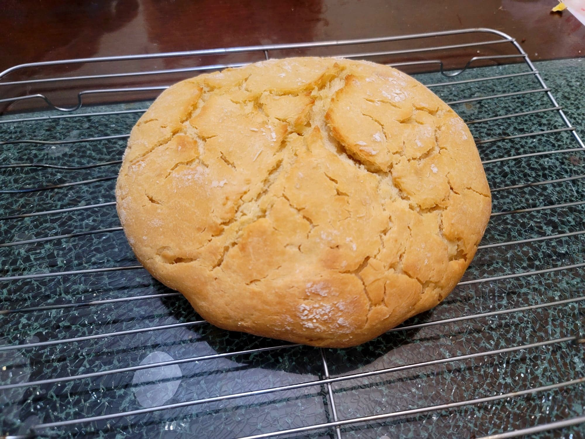

Damper

Ingredients:
- 2 cups (240 g) Flour
- 1 tbsp Baking powder
- 3/4 tsp Salt, or to taste
- 20 g Butter, cubed
- ~1 cup Water, or half Water, half Milk, as needed
Instructions:
- Preheat an oven or dutch oven to 360 degrees Fahrenheit.
- Combine the dry ingredients and combine evenly. Then add in the butter and incorporate it well with your hands. Then stir in the water with a rubber spatula until it forms a dough. Do not overknead.
- Dust the dough with flour and transfer onto a parchment paper. Flatten lightly and then place into the oven/dutch oven for about 25 minutes or more. If using a dutch oven, optionally remove the lid towards the end to add some color. The damper is done when it sounds hollow when tapped on.
- Remove from the oven and let cool completely. Slice and serve.